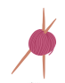

Crochês da chica

o seu site de crochê
Menu princial:
Home
Galeria
Tutoriais
sobre
Contato
Tutoriais
Aqui estão videos dos 4 principais tipos de crochê!
Ponto corrente ou correntinha
Ponto baixo
Ponto baixíssimo
Ponto alto